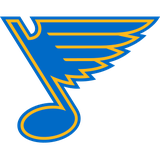

The Infirmary: Detroit loses Datsyuk to an ankle, and the Wings' 226 lost days keep climbing
The 36-point center is out until March 13, and the lineup restructuring was already underway
 Ray CallumSenior correspondent · Home Ice Network
Ray CallumSenior correspondent · Home Ice Network
The piece
 Pavel Datsyuk70 carries an ankle designation with a return date of March 13. The onset is somewhere between January 31 and February 6. He has played 52 of Detroit's 53 games this season at 20.7 minutes a night, logging 36 points on 6 goals and 30 assists with 12 penalty minutes.
Pavel Datsyuk70 carries an ankle designation with a return date of March 13. The onset is somewhere between January 31 and February 6. He has played 52 of Detroit's 53 games this season at 20.7 minutes a night, logging 36 points on 6 goals and 30 assists with 12 penalty minutes.
The Wings have filed 33 injury spells this season, 226 days lost to the league's designations. That places them 8th in the infirmary ledger, ahead of Phoenix Coyotes, New York Rangers and  Washington Capitals but behind Tampa Bay Lightning at 497, Pittsburgh Penguins at 425 and
Washington Capitals but behind Tampa Bay Lightning at 497, Pittsburgh Penguins at 425 and  New York Islanders at 275. The current active list is short: Datsyuk and Michael Zigomanis69, who carries a back designation also returning March 13.
New York Islanders at 275. The current active list is short: Datsyuk and Michael Zigomanis69, who carries a back designation also returning March 13.
The lineup changes filed this week show Detroit was already reshaping around the absence.  Brendan Shanahan79 moved to a center slot on the second line and the power play. Zetterberg came up from fourth line left wing to third, and
Brendan Shanahan79 moved to a center slot on the second line and the power play. Zetterberg came up from fourth line left wing to third, and  Kevyn Adams71 took over his spot at fourth line center. Down a line,
Kevyn Adams71 took over his spot at fourth line center. Down a line,  Kris Draper72 slid to the second line center from the third.
Kris Draper72 slid to the second line center from the third.
 Detroit Red Wings sits 7th in the Western Conference at 63 points, 8 ahead of Columbus Blue Jackets in 8th and 10 behind the two clubs at 71. Datsyuk's absence covers roughly 10 games at a minimum, through the end of February, depending on how many Detroit plays before the March 19 trade deadline.
Detroit Red Wings sits 7th in the Western Conference at 63 points, 8 ahead of Columbus Blue Jackets in 8th and 10 behind the two clubs at 71. Datsyuk's absence covers roughly 10 games at a minimum, through the end of February, depending on how many Detroit plays before the March 19 trade deadline.
The schedule this week offers a soft patch:  Colorado Avalanche on February 6 at home, where Detroit is 19-7, and Colorado Avalanche again on February 8 on the road. The Wings won the first meeting 3-2. Colorado has won 1 of its last 2 and is 17-8 away this season. The season series between these two reads 1-0-0 to Detroit from a single meeting.
Colorado Avalanche on February 6 at home, where Detroit is 19-7, and Colorado Avalanche again on February 8 on the road. The Wings won the first meeting 3-2. Colorado has won 1 of its last 2 and is 17-8 away this season. The season series between these two reads 1-0-0 to Detroit from a single meeting.
Detroit's remaining games through the Datsyuk window include 